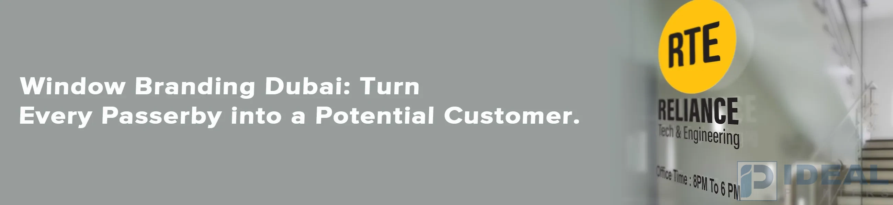

Window Branding Lahore: Turn Every Passerby into a Potential Customer

In Lahore, where companies must stand out, utilizing their store's glass windows to advertise is vital. With high-quality window fonts and graphics, you can transform plain glass into attractive advertisements.
We are Ideal Printers. We help companies in Lahore stand out with customized window solutions that concentrate on privacy, visibility, and design. If you own a hotel, shop, clinic, school, or office, our window branding solutions are tailored to meet your specific needs.
Why Use Window Branding for Lahore Businesses?
Lahore is renowned for its sleek structures and bustling business scene. If your windows are plain, it's an unintentional miss. Customizing your graphics can help make your company stand noticed and help you communicate with prospective customers.
Here's the reason Window graphics are crucial:
- More Visibility: Customized images catch the eye and draw in more customers.
- Professional look: A well-designed window display gives confidence and a consistent look.
- Effective Marketing: Advertise sales and new offerings or seasonal promotions directly to your customers.
- Privacy Options: You can use specific stickers or films to hide your identity while allowing light.
- Cost-Effective: In contrast to traditional advertisements, window graphics are a single-time expense with lasting advantages.
Our Window Branding Services in Lahore
Here at Ideal Printers, we offer different Window branding choices that blend design and practicality:
1. Window Vinyl Lettering
- Simple and effective to display the business information on glass.
- Excellent to display names as well as hours and contact information.
Benefits:
- Professional look, Flexible, durable, Easy to modify.
One of the most effective ways to promote your brand or share important messages is through eye-catching Window vinyl lettering.
2. Window Graphics
- Full-color graphics printed on vinyl to give more impact.
- Ideal for showcasing items or promotions.
Benefits:
- High-quality images with various designs can take over vast areas.
3. One Way Vision Stickers
- Allow the insiders to view in while promoting to people outside.
- Ideal for busy storefronts and clinics.
Benefits:
- Privacy, clear views, natural light, reduces glare.
4. Frosted and Tinted Window Films
- Elegant films that offer privacy and fashion.
- Ideal for conference rooms, offices, and retail spaces.
Benefits:
- Keep it light, easy to clean, easy to put in.
Creative Uses of Window Branding for Different Businesses in Lahore
Window branding isn't the same for all businesses. How companies utilize graphic window labels, stickers, and films will vary significantly from one field to the next. In Ideal Printers, we help businesses across a range of industries develop unique window designs that match their needs and preferences.
Here's how various types of companies in Lahore make use of window branding:
Retail Stores and Boutiques
Stores make use of colorful window graphics and stickers to advertise sales, new products, sales, or other special events. Also, they use vinyl letters to announce store hours as well as social media links. Tinted films keep the sun from hindering the view.
Restaurants and Cafes
Restaurants utilize frosted films for privacy, as well as vinyl letters for menus or Wi-Fi details on glass, as well as graphic designs to promote their brand. Window films also reduce heat in areas that face outwards.
Corporate Offices and Co-Working Spaces
Offices usually choose films with frosted edges featuring their logos or designs in order to appear professional and to keep the information private. Vinyl letters work well for doors in offices. Window graphics are often used at receptions to showcase their logo.
Clinics, Spas, and Salons
Companies in the fields of beauty and health concentrate on privacy and fashion. One way to do this is with vision stickers. Frosted films can be used to conceal information and allow for promotion. Simple branding using vinyl text gives a professional appearance without overwhelming.
Gyms and Fitness Studios
Gyms in Lahore typically use large-scale graphics to draw attention to their stores and draw the attention of customers. One method of vision stickers lets those inside feel relaxed while displaying their brand's image to people outside.
Every business has its unique requirements. Our staff of experts at Ideal Printers can create solutions that look great and function effectively, making your windows crucial to your brand.
Why Choose Ideal Printers?
Ideal Printers has over 15 years of experience providing custom-designed signage as well as branding services. We're the best choice:
- Custom Designs: Our team designs graphics that reflect your brand.
- Quality Materials: We only use the best vinyl and printing techniques.
- Expert Installation: Our professionals ensure perfect application.
- Fast Service: We meet the tight deadlines but not sacrificing quality.
- Full Support: From beginning to end, we simplify the process.
We've worked on a variety of projects in Lahore and made sure that every one is appropriate for the place and the audience.
Enhances Interior Aesthetics and Functionality
Window branding isn't only for windows, but it also plays an important part in interior designs. Numerous companies in Lahore use frosted film windows, window graphics, as well as One-way vision stickers to enhance aesthetics and functionality in their buildings.
- Stylish privacy: Frosted films are perfect for meeting rooms and glass partitions that provide privacy, but not blocking light.
- Higher Light Control: Tinted films and vision stickers can lessen heat and glare and create a more relaxing space.
- Interior branding: Window graphics in interior glass can showcase the brand's values, visuals of products, or inspirational quotes to improve the atmosphere.
- Defined spaces: Offices with open layouts benefit from glass branding which divides spaces without walls.
We are Ideal Printers. We help Lahore businesses use glass surfaces, both inside and out, to showcase their brand, while improving the experience for employees.
Long-Lasting and Easy to Maintain
The window graphics we offer are made to last for a long time. They are weatherproof and UV-resistant with minimal upkeep. Cleaning is easy and you can even change your graphics without damaging the glass.
Final Thoughts
The windows of your business are essential areas for branding. In Lahore, where first impressions are crucial, using every surface is effective. By using our solutions for window branding, you can increase visibility, boost your marketing, and create a positive customer experience.
Whether you're looking for large-scale graphics for a launch, elegant lettering for your door, or a privacy sign, Ideal Printers can provide everything you require with top quality.
Get in Touch with Ideal Printers
Visit Us: Model Town Industrial Area 2, Lahore, Pakistan
Call: +92 42 3597 9285
Email: idealprinter41@gmail.com
Instagram: @idealprinters
Ready to bring your paper bag ideas to life? Reach out now - our team is eager to assist you in creating standout packaging that reflects your brand perfectly.